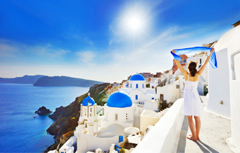
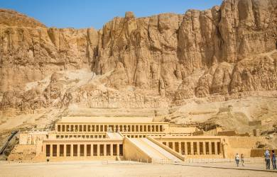
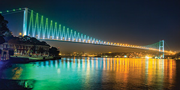

 Варто лише заговорити про Грецію, як відразу на думку спадають всесильні Олімпійські Боги на чолі з Громовержцем Зевсом, що сидить на височенному троні в своїх палатах на вершині Олімпу, або гомерівські
герої, філософи давнини і талановиті скульптори античних часів, а також великий похід Олександра Македонського і розкидані по узбережжю Середземного і Чорного морів безліч грецьких колоній, які залишили глибокий слід в культурах різних
народів в процесі еллінізації Сходу. Столиця держави: Афіни. Вважається торговим і фінансовим центром країни. Чисельність населення столиці з урахуванням передмість становить 3,2 млн. чоловік.
Географія
Країна знаходиться на Балканському півострові і на островах, які прилягають до нього і до Малої Азії. Межує з Болгарією, Туреччиною, Албанією. 1/5 країни – острова, яких налічується близько 2 тисяч. Протяжність берегової лінії – 4100 км. Омивається Середземним
морем, в т.ч. Егейським і Іонічним морями. Острів Крит омивається з південного боку Лівійським морем.
Клімат
Клімат помірний середземноморський. Завдяки цьому, зима тут м’яка і супроводжується високою вологістю. Влітку, навпаки, пекуче сонце нагріває повітря до позначки в 28-32 градуса. Ідеальний час для пляжного відпочинку – вересень і жовтень. Погода навесні
і восени постійно змінюється. Цей час краще присвятити знайомству з унікальними пам’ятками, ніж пляжному відпочинку.
Єгипет
 Єгипет – країна, в якій літо цілий рік. Хто не був в Єгипті – не знає, що таке море, сонце… пісок, пустеля не знає, що таке справжній відпочинок, не знає, як це здорово – вирватися в літо посередині
зими! Єгипет – чарівна країна. Це батьківщина однієї з найдавніших і найрозвиненіших цивілізацій, яка зробила колосальний вплив на розвиток світової культури. Тіні богів, мумії фараонів, загадкові сфінкси і величні гробниці – ці поняття
відомі навіть самим далеким від історії людям. Велика кількість історичних пам’яток світового рівня, екзотична природа, непоганий сервіс – все це робить Єгипет надзвичайно привабливим для мандрівників.
Географія
Сьогоднішній Єгипет – найбільша арабська країна, розташована на північному сході Африки. Частина його території – Синайський півострів – знаходиться в Азії. Кордон між двома континентами проходить по Суецькому каналу. Площа країни складає 1 001 449 км2,
з них 96% займає пустеля і лише 4% – оброблювані землі по берегах Нілу. На півночі країну омиває Середземне море, на сході – Червоне море.
Клімат
На узбережжі Середземного моря в Єгипті клімат субтропічний, на решті території – тропічний пустельний. Влітку жарко. З травня по вересень температура повітря в Каїрі вдень становить приблизно 35-40 градусів тепла, з грудня по лютий + 20-25 градусів.
Взимку вночі прохолодно. Самий жаркий час: з липня по жовтень. Любителям екстремальних відчуттів можна порекомендувати Єгипет в липні або серпні. Особливо Луксор, де, в долині Царів, може бути жарко до ознобу. З жовтня температура
повітря в країні стає цілком комфортною. Тим же, хто хоче відпочити від вогкої зими кращий час їхати до Єгипту з грудня по березень (температура повітря від +23 до +25 градусів тепла, вода в Червоному морі – від +19 до +21 градусів).
Турція
 Туреччина – це не тільки сонце, пляжі і дискотеки, а й давня культура. У цій країні є такі архітектурні пам’ятники, на які необхідно подивитися навіть людям, котрі побували в Елладі або Китаї. Країна,
в якій мріють провести свій відпочинок мільйони людей. Для кого-то ця мрія втілюється в реальність, комусь щастить менше, але факт залишається фактом: Туреччина – це рай на землі. Турки зазвичай дружні і доброзичливі. На зарозумілість
іноземців, однак, реагують по-різному. Тому візьміть до уваги культурні відмінності ісламу і додержуйте шану перед національними символами (наприклад, національним прапором і пам’ятником засновника Турецької Республіки Мустафи Кемаля
Ататюрка).
Географія
Туреччина – міжконтинентальна країна. Азіатська частина Туреччини (розташована на Анатолійському плоскогір’ї) становить 97% держави і відділена від європейської частини Туреччини Босфорським протокою і Мармуровим морем. Площа Туреччини становить 783 562
кв км. Із заходу країна омивається Егейським морем, з півночі – Чорним морем і Середземним морем – з півдня. На сході країни переважає гірський рельєф, тут же протікають річки Євфрат і Аракс, і знаходиться найвища точка країни – гора
Арарат (5 137 м).
Клімат
Клімат країни середземноморський. Найсприятливіший час для відпочинку в Туреччині – період з квітня по травень і з вересня по жовтень. Погода в цю пору року має до екскурсій по Стамбулу, а центральна Анатолія радує прохолодою.